.orangehrm-buzz-stats-like-icon) instead of the actual Like control in the post action bar (.orangehrm-buzz-post-actions #heart-svg). Clicking the real control toggled Like/Unlike correctly, with matching API calls. Counts above are updated: previously 15 PASS / 2 FAIL / 2 defects. See TC-008 and DEFECT-002 below.
sri venkatadri nivasa balaji shyama madhusudhana lukumisha this run (vs. "manda user"/"manda akhil user" in the same-day earlier run, and "NewName OTH5002" in Milestone 1) — consistent with the shared demo's session identity varying between independent logins, as previously flagged in Exploration §7 Open Question 6. Confirmed the same underlying account via the "own post" Edit+Delete options-menu pattern (TC-010).
Test Case Results (TC-001 – TC-020)
TC-001Post composer displays required controlsPASS
Expected: Composer shows "What's on your mind?" textbox, Post button, Share Photos button, Share Video button.
Actual: All four controls present and rendered exactly as expected.
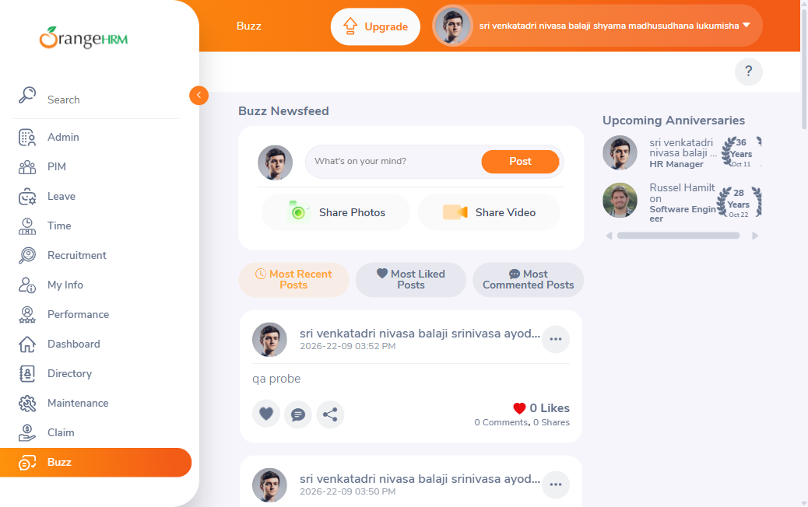
TC-002Feed post card displays author, timestamp, content, countersPASS†
Expected: Each card shows author, avatar, timestamp, content, and Like/Comment/Share counters.
Actual: Confirmed on all 8 cards present at observation time — every card shows author name/avatar, timestamp, text and/or image, and Like/Comment/Share counters correctly.
Deviation: Precondition cited the original 4-post snapshot; the live feed already held 8 posts at session start (see environmental note above). The structural assertion (every card shows the required fields) holds regardless of count, so this is reported PASS† rather than FAIL.
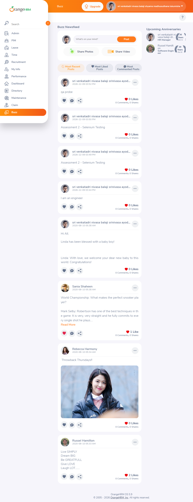
TC-003Default feed filter is 'Most Recent Posts'PASS
Expected: "Most Recent Posts" active by default; posts in reverse-chronological order.
Actual: Confirmed — button carried the active (label-warn) CSS class (verified via browser_evaluate, since this DOM build no longer exposes an accessibility-tree [active] attribute the way the earlier session's build did); feed order matched timestamps descending (03:52 PM → … → 05:33 AM 2020).
TC-004'Most Liked Posts' filter sorts descending by Like countPASS
Expected: Feed re-sorts descending by Like count; button gains active state.
Actual: Order became Russel Hamilton (2) → Sania Shaheen (1) → Rebecca Harmony (0) → the 5 remaining zero-like posts, confirmed via DOM query. Correct descending sort.
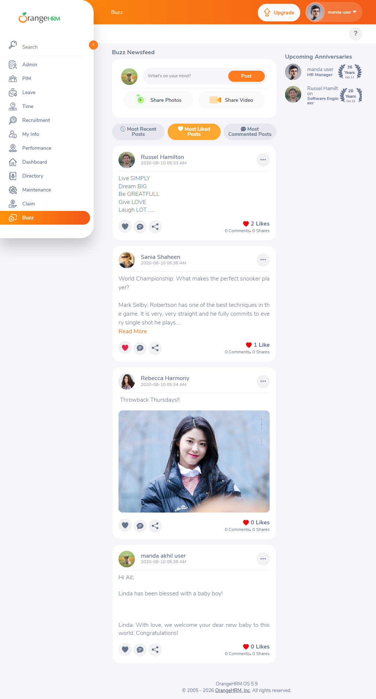
TC-005'Most Recent Posts' restores original feed orderPASS
Expected: Order restored exactly to reverse-chronological; re-sorting is non-destructive.
Actual: Confirmed — order identical to the pre-filter baseline (all 8 posts, same sequence); no like/comment counts were altered by the re-sort.
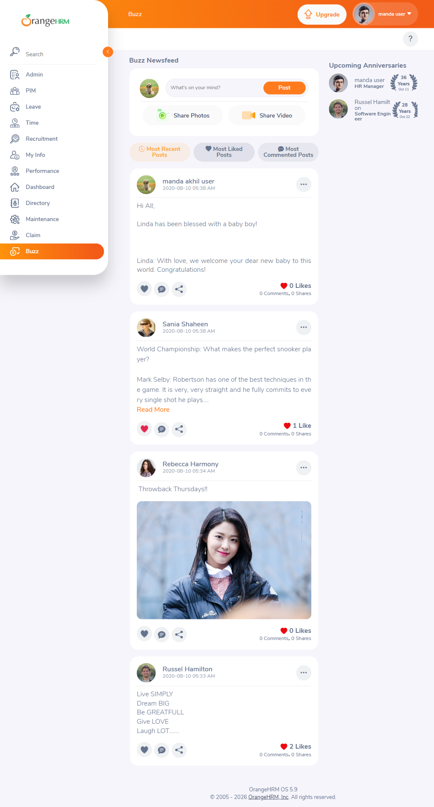
TC-006Upcoming Anniversaries panel displays and is non-interactivePASS
Expected: Panel shows avatar/name/title/year-badge/date; clicking an entry has no effect.
Actual: Panel displayed correctly (logged-in user — 36 Years — Oct 11; Russel Hamilton — 28 Years — Oct 22); click on an entry produced no navigation and no visible change (URL unchanged, confirmed via window.location.href).
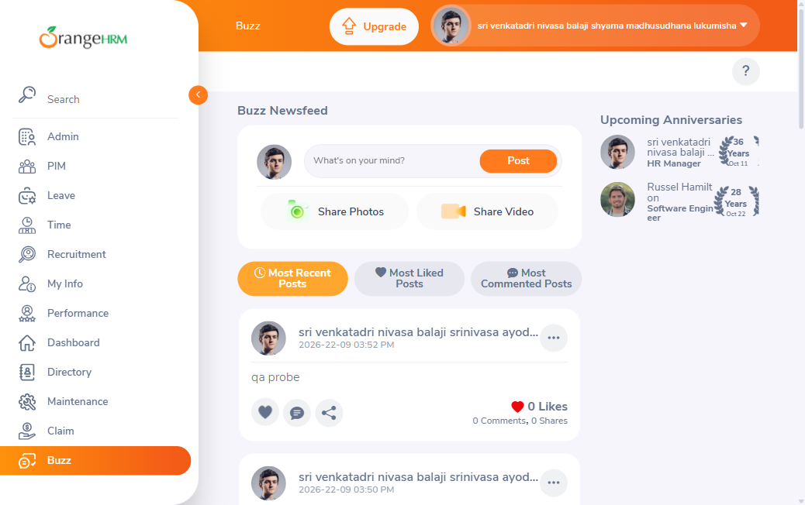
TC-007'Read More' expands truncated post textPASS
Expected: Full text becomes visible; "Read More" link disappears; no "Show Less" appears afterward.
Actual: Confirmed — Sania Shaheen's full post text is visible after the click; the "Read More" paragraph is removed from the DOM/accessibility tree afterward; no collapse control appeared.
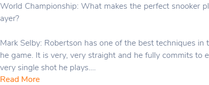
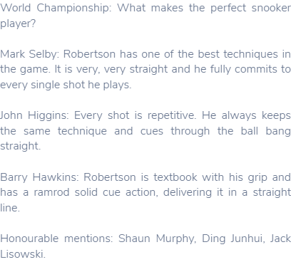
TC-008Like/Unlike toggle updates count and icon statePASS
Re-verification — 2026-09-27 (current result: PASS)
Target: Sania Shaheen's post (0 Likes at start), feed back at the original 4-post baseline. Genuine Playwright clicks on .orangehrm-buzz >> nth=1 >> .orangehrm-buzz-post-actions #heart-svg.
- Click 1 (like): count 0 Likes → 1 Like; heart fill turned red
rgb(226, 38, 77); wrapper gained classorangehrm-like-animation. Network:POST /api/v2/buzz/shares/9/likes → 200. - Click 2 (unlike): count 1 Like → 0 Likes; heart fill back to grey
rgb(100, 114, 140); wrapper class cleared. Network:DELETE /api/v2/buzz/shares/9/likes → 200. - Control check: a genuine click on the stats-row icon
.orangehrm-buzz-stats-like-icon(what the original run clicked) caused no count change and sent no request. This reproduces the original "silent no-op" exactly and shows why it happened.
Conclusion: Like/Unlike works as expected. The stats-row <i class="bi-heart-fill"> icon is a display-only counter decoration. It did not replace #heart-svg; both exist on every post. The original run's claim that the locator had changed was wrong: #heart-svg is still the working Like control. All Like counts were checked afterward and match the pre-test baseline (1, 0, 0, 2).

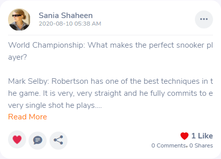
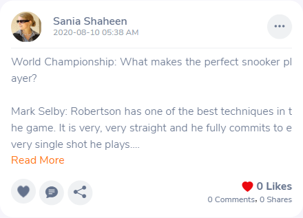
Original run — 2026-09-22 (superseded FAIL, kept for audit)
Expected: Clicking the heart icon on a "0 Likes" post increments to "1 Like"; clicking again reverts to "0 Likes".
Actual: No state change occurred on any attempt. Tried three independent methods, on three different posts at three different starting counts:
- Genuine Playwright click on the heart icon (
.orangehrm-buzz-stats-like-icon) of the "qa probe" post (0 Likes) — no change. - Genuine Playwright click on the same icon of the "Hi All; Linda…" baseline post (0 Likes) — no change.
- Genuine Playwright click on the same icon of Sania Shaheen's post (1 Like, to test the unlike direction) — no change.
- Direct DOM
element.click()and a dispatchedMouseEvent('click', {bubbles:true})on both the icon and its parent.orangehrm-buzz-stats-row— no change.
Checked browser_network_requests after each attempt: no POST/PUT/PATCH request to any like-related endpoint was ever triggered — only the initial page-load GET /api/v2/buzz/feed calls appear in the log. No console errors were logged either (silent no-op). This indicates the click handler itself is not firing an action, not a server-side rejection.
Originally raised as DEFECT-002 (now withdrawn, see above and below). All attempts targeted the display-only stats-row icon, not the action-bar Like control.
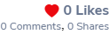
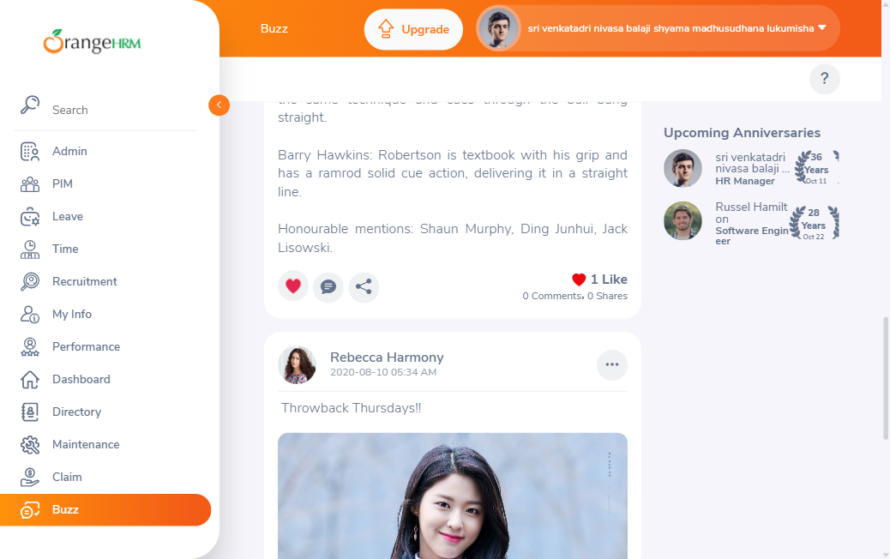
TC-009Comment toggle expands/collapses inline comment boxPASS
Expected: Clicking "0 Comments" expands a "Write your comment..." textbox; clicking again collapses it; no navigation.
Actual: Confirmed — textbox appeared after the first click (verified via DOM query for the placeholder) and was removed after the second click. No text was typed/submitted. Unlike the Like control (TC-008), this click handler works correctly.
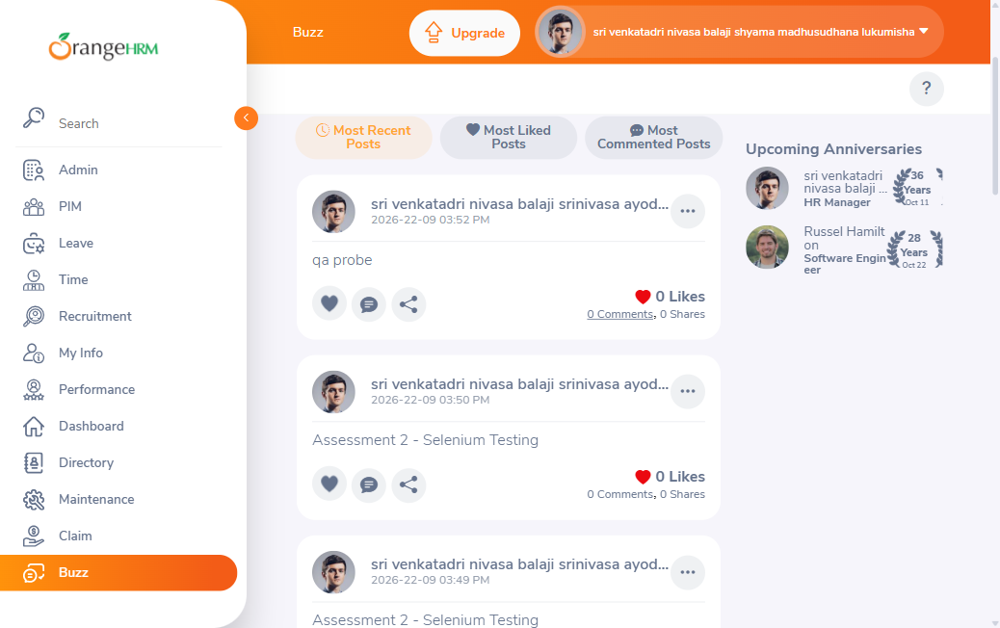
TC-010Options menu on own post shows Edit Post and Delete PostPASS
Expected: Menu on the logged-in user's own post shows exactly "Edit Post" and "Delete Post".
Actual: Confirmed on the "qa probe" post (own post, matched by avatar/display name). Neither item was clicked.
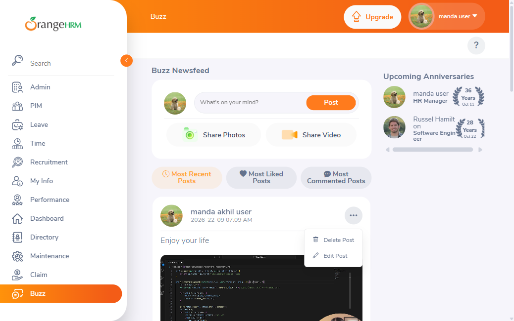
TC-011Options menu on another author's post shows Delete Post onlyPASS
Expected: Menu on another author's post shows only "Delete Post" (no Edit Post).
Actual: Confirmed on Sania Shaheen's post — only "Delete Post" present. Reproduces the BR-005 pattern from Exploration §3.9. Not clicked.
TC-012Share Photos 'Share' button disabled until photo attachedPASS
Expected: "Share" button disabled while no photo is attached.
Actual: Confirmed — accessibility snapshot shows button "Share" [disabled] inside the Share Photos dialog. Closed via "×" without attaching a file.
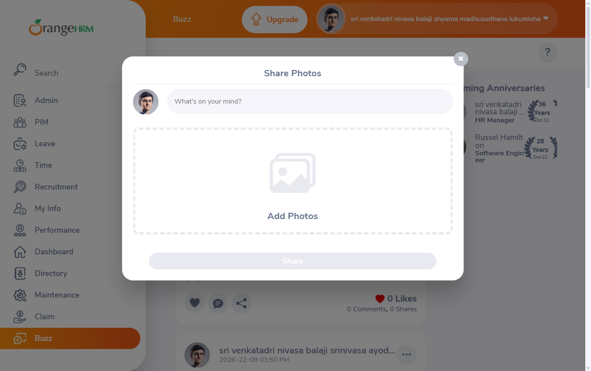
TC-013Clicking attached photo opens full-screen lightboxPASS
Expected: Full-screen lightbox opens on click; closes cleanly via "×" with no residual state.
Actual: Confirmed on Rebecca Harmony's post. Lightbox opened on the first click attempt (no locator mis-resolution this run, unlike the prior execution's documented issue) and closed cleanly via .orangehrm-photo-viewer-close.
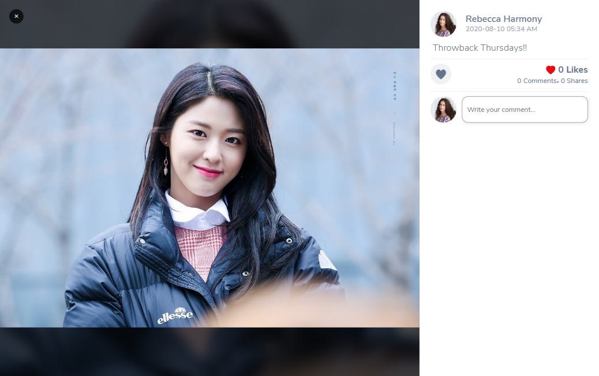
TC-014Share Post (repost) modal opens with optional captionBLOCKED
Expected: Clicking the Share/repost icon opens a "Share Post" dialog with an optional caption and an enabled "Share" button (not clicked).
Actual: Not executed. The click on the repost icon was refused by the Claude Code tool's own permission classifier ("Modify Shared Resources") before the page was reached — a tooling-level restriction, not an application behavior or a skill-policy exclusion (opening this same class of non-submitting dialog succeeded for Share Photos/Share Video in TC-012/TC-019). No workaround was attempted, per the classifier's own guidance not to route around a denial.
Classified BLOCKED (system-level dependency prevented reaching a definitive result), not FAIL/SKIP.
TC-015Post author name/avatar click produces no navigationPASS
Expected: Neither click navigates away; URL stays on /buzz/viewBuzz.
Actual: Confirmed for both the author-name text and the avatar image on Sania Shaheen's post — URL unchanged after each click.
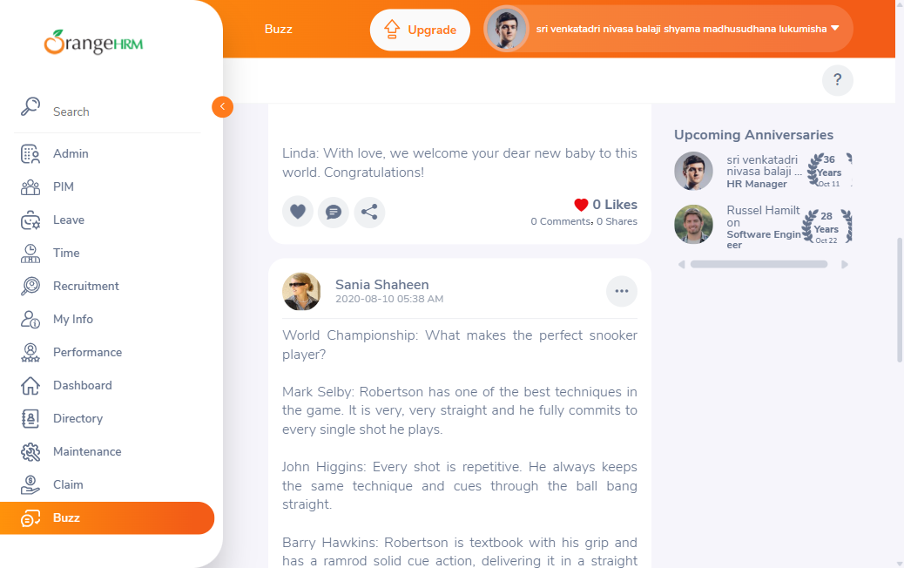
TC-016Topbar 'Help' button opens external site in new tabPASS
Expected: New tab opens to https://starterhelp.orangehrm.com/hc/en-us.
Actual: Confirmed via browser_tabs listing (tab 1 opened to the expected URL). Closed without further navigation.
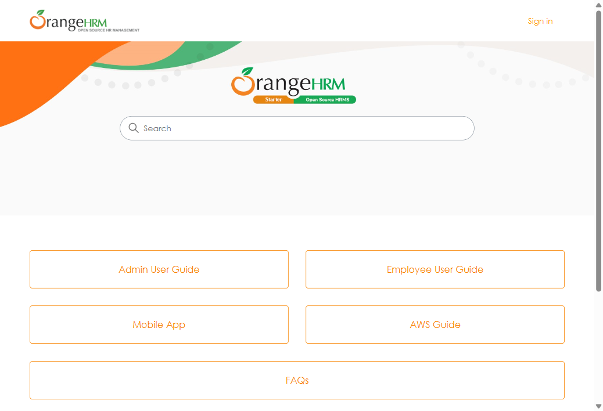
TC-017Profile menu shows About/Support/Change Password/LogoutPASS
Expected: Menu shows exactly those four items.
Actual: Confirmed via DOM query of [role="menuitem"]: About, Support, Change Password, Logout. No item selected.
TC-018Feed displays all posts with no pagination at current volumePASS†
Expected: All posts shown without pagination; footer appears immediately after the last post. Precondition cited the original 4-post volume.
Actual: Confirmed at the live 8-post volume: no pagination/load-more controls found in the DOM; the page footer ("OrangeHRM OS 5.9…") is present immediately after the last post with no intervening controls.
Deviation: Verified against 8 posts, not the 4-post precondition, per the environmental note above — the no-pagination behavior itself still holds.
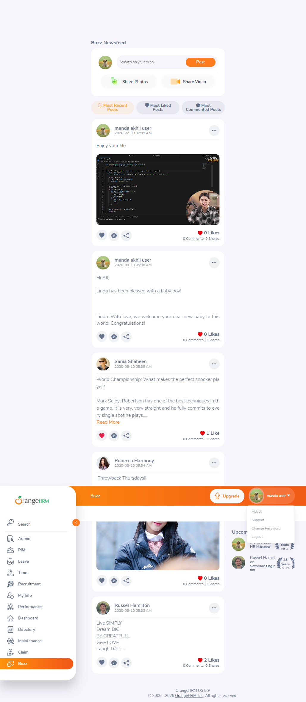
TC-019Share Video 'Share' button not disabled despite empty Video URLPASS (defect confirmed)
Expected: "Share" button remains enabled with an empty "Paste Video URL" field, unlike Share Photos (TC-012).
Actual: Confirmed — accessibility snapshot shows button "Share" with no [disabled] marker, while the URL field is empty. Reproduces the validation asymmetry first flagged in Exploration §3.4 and confirmed in the prior M4 run's DEFECT-001. Button was not clicked (would create content). See DEFECT-001 below.
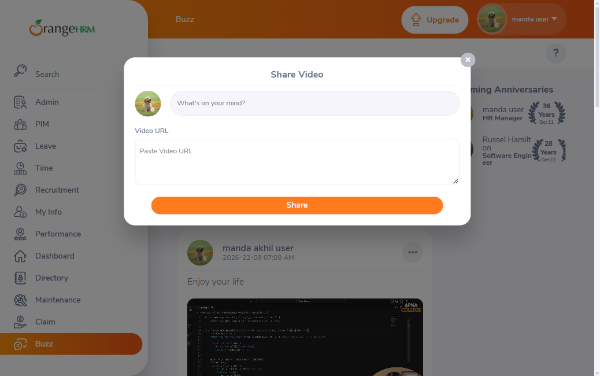
TC-020'Most Liked' vs 'Most Commented' tie-break order differsFAIL
Expected (per test-design CSV, carried from Exploration §3.5/§5 discrepancy 7): the two filters order same-count posts differently from each other, indicating independent secondary sort keys.
Actual: With the current 9-post live feed (all 9 tied at 0 Comments; 7 tied at 0 Likes), both filters produced the same relative tie-break order for every genuinely-tied group: ascending chronological (oldest-created first). Direct comparison:
- Most Liked (0-Like tie group): Rebecca Harmony → sri…(2020-08-10) → sri…(03:44 PM) → sri…(03:49 PM) → sri…(03:50 PM) → sri…(03:52 PM) → sri…(04:00 PM).
- Most Commented (all 9 tied): Russel → Rebecca → Sania → sri…(2020-08-10) → sri…(03:44) → sri…(03:49) → sri…(03:50) → sri…(03:52) → sri…(04:00).
Restricting Most Commented's order to only the same 0-Like subset reproduces exactly Most Liked's tie-break order. The two sorts use the same secondary key for genuinely tied posts — they do not "differ from each other" as the expected result claims.
Re-analysis of the original finding: the original Exploration §3.5 comparison (Sania before Rebecca under Most Liked, but Rebecca before Sania under Most Commented) was not actually comparing two tied posts under Most Liked — Sania (1 Like) genuinely outranks Rebecca (0 Likes) there, so that ordering reflects the primary sort key, not a tie-break. Only Rebecca vs. the 0-like posts is a true tie in both filters, and in that true-tie comparison both filters agree (ascending time). This looks like a test-design/expected-result correction candidate rather than a live application defect — logged here, not raised as a formal defect, since the behavior observed (a single consistent, deterministic secondary sort key) is arguably more correct than the originally-suspected "independent keys" behavior.
Classified FAIL (a definitive result was reached that contradicts the CSV's literal expected-result text), not BLOCKED — per the skill's instruction not to invent or retroactively soften an expected result.
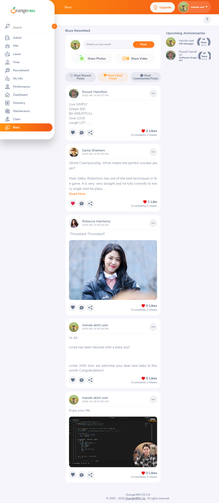
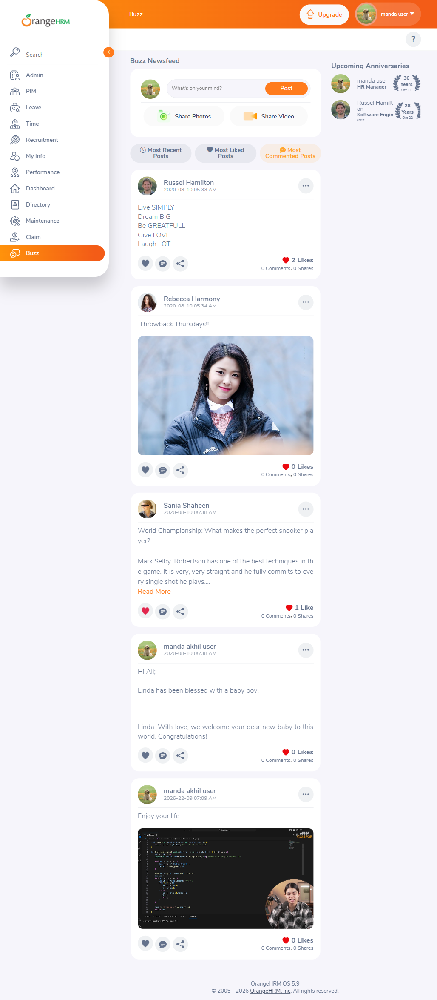
BUZZ-TC-021 – BUZZ-TC-027 — BLOCKED (interaction-policy exclusion)
Per the run's instructions, these 7 cases were classified BLOCKED — excluded by interaction policy without being attempted: each requires publishing content (post, photo, video, comment, repost) or probing another user's edit permission on this shared public demo instance.
- BUZZ-TC-021 — Publish a new text post via composer.
- BUZZ-TC-022 — Upload a photo via Share Photos and publish.
- BUZZ-TC-023 — Submit Share Video with a valid URL.
- BUZZ-TC-024 — Submit Share Video with an empty URL (defect verification for DEFECT-001).
- BUZZ-TC-025 — Submit a comment on a post.
- BUZZ-TC-026 — Submit a repost via Share Post modal.
- BUZZ-TC-027 — Verify server-side enforcement of Edit Post permission.
Formal Defects
DEFECT-001 — Share Video "Share" button not disabled despite empty Video URL
- Screen / Path
- Buzz Newsfeed, Share Video modal —
/web/index.php/buzz/viewBuzz - Preconditions
- Logged in; on Buzz Newsfeed; composer visible.
- Steps
- 1. Click "Share Video". 2. Leave "Paste Video URL" empty. 3. Observe the "Share" button's disabled state (do not click it).
- Actual
- "Share" button remains enabled with an empty URL field.
- Expected
- "Share" should be disabled while the URL field is empty, matching Share Photos' behavior (disabled until a photo is attached).
- Reproducibility
- 2/2 — confirmed in the prior same-day M4 run and reproduced again in this re-run.
- Severity / Priority
- High / High — validation asymmetry vs. the equivalent Share Photos flow; downstream submission behavior (BUZZ-TC-024) remains unverified since submitting is excluded by policy.
- Affected TCs
- TC-019 (confirmed), BUZZ-TC-024 (blocked, would resolve whether this results in a broken/empty post).
DEFECT-002 — Like/Unlike toggle is completely non-functional — WITHDRAWN (invalid)
Status 2026-09-27: Withdrawn, not a product defect. A targeted re-verification found that every attempt below clicked the display-only stats-row icon (.orangehrm-buzz-stats-like-icon), not the Like control (.orangehrm-buzz-post-actions #heart-svg). The real control toggles Like/Unlike correctly (POST/DELETE /api/v2/buzz/shares/{id}/likes → 200), so there was no regression. The original record is kept below for audit only.
- Screen / Path
- Buzz Newsfeed, post action row —
/web/index.php/buzz/viewBuzz - Preconditions
- Logged in; on Buzz Newsfeed; feed contains posts with 0 and non-zero Like counts.
- Steps
- 1. Click the heart icon (
.orangehrm-buzz-stats-like-icon) on any post. 2. Observe the Like count and icon. - Actual
- No change in Like count on any attempt. Confirmed with a genuine Playwright click (not just an accessibility-tree ref click) on three different posts at three different starting counts (0, 0, 1). Also confirmed with a direct DOM
.click()call and a dispatched bubblingMouseEvent.browser_network_requestsshows no like-related POST/PUT/PATCH request was ever sent — the click produces no visible network activity and no console error, i.e. a silent client-side no-op. - Expected
- Click toggles Like/Unlike, updates the count and icon, per Exploration §3.7 and the prior M4 run's TC-008 PASS result.
- Reproducibility
- 3/3 posts tested this run; 0/3 produced any state change or network call. This is a regression against the same-day earlier M4 run, where the equivalent interaction (TC-008) passed.
- Severity / Priority
- High / High — a core, previously-working interactive feature (Like) now appears entirely broken. Comment-toggle (TC-009), by contrast, still works correctly on the same page, so this is not a page-wide JS failure.
- Root-cause note (not confirmed)
- The DOM markup for the Like icon changed since the earlier session: it is now a Bootstrap Icons
<i class="oxd-icon bi-heart-fill orangehrm-buzz-stats-like-icon">, not the<svg id="heart-svg">element documented in Exploration §4's Locator Reference Table. Possibly a front-end event-binding regression introduced alongside that markup change; not independently verified against server/API logs. - Affected TCs
- TC-008 (originally FAIL; PASS on re-verification 2026-09-27).
Findings Summary (for Milestone 5 automation)
- Feed filters (Most Recent / Most Liked / Most Commented) sort correctly; tie-break behavior for genuinely-tied posts is consistent (ascending creation time) across both non-default filters in this run's data — a correction candidate against the original "independent secondary sort keys" exploration finding (see TC-020 above).
- Comment expand/collapse (TC-009), options menu permission pattern (TC-010/TC-011), Share Photos validation (TC-012), photo lightbox (TC-013), and profile/Help menus (TC-016/TC-017) all remain stable and automatable — locators from Exploration §4 still resolve correctly for these.
- Like locator (corrected 2026-09-27): the Like control is still
svg#heart-svg, now scoped as.orangehrm-buzz-post-actions #heart-svgwithin each.orangehrm-buzzcard, because the id is duplicated across posts. The stats-row.orangehrm-buzz-stats-like-iconis display-only and must not be used as a click target. The liked state can be checked through the wrapper classorangehrm-like-animationor the heart path's fill colour. - The Share (repost) icon click is blocked by the Claude Code tool's own permission classifier in this execution environment (TC-014) — this is specific to this agentic tooling context, not an application behavior; a Milestone 5 Playwright script run outside this MCP tool would not be subject to it.
- DEFECT-002 was re-verified and withdrawn. Like/Unlike works and can be automated with the scoped action-bar locator above.
Exit Assessment
Fully validated
- Composer structural presence, feed sort filters (including tie-break re-analysis), Read More, options-menu permission pattern (BR-005), Share Photos validation, photo lightbox, author/avatar non-interactivity, Help button, profile menu, no-pagination behavior.
- DEFECT-001 (Share Video validation asymmetry) re-confirmed reproducible across two independent runs.
- Like/Unlike toggle (TC-008). PASS on targeted re-verification 2026-09-27, with count, icon state and API calls all confirmed.
Blocked / Failed / Out of scope
- FAIL: tie-break "independent keys" claim (TC-020, test-design correction candidate, not a product defect). TC-008 / DEFECT-002 was withdrawn after re-verification on 2026-09-27; see above.
- BLOCKED (tooling): Share Post/repost modal (TC-014) — Claude Code permission classifier, not an app or policy issue.
- BLOCKED (policy): BUZZ-TC-021–027 — all content-creating/permission-probing actions on the shared public demo.